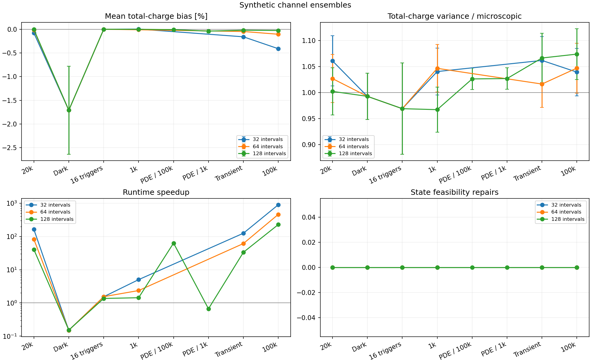
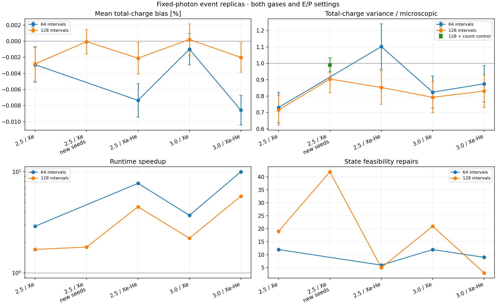

Default: 128 intervals per 250 ns bucket. Maximum saved-event mean-charge difference: 0.0028%. Measured sensor speedup: 1.7 to 5.7 times. The two-event pilot completed for both gases, including the ASIC stage. Full production remains stopped.
PDF report · Model derivation · Two-event pilot manifest
The statistical model preserves binomial PDE and Poisson dark-count sampling. Fixed counts are partitioned into short intervals; finite-cell occupancy gives conditional charge moments. A bounded beta draw supplies charge fluctuations, and the same charge updates recovery. The second recovery moment uses a closure preserving its conditional expected loss. Sparse buckets use individual arrival times and aggregate-state draws. The physical setup has 7,854 cells, 73.4 ns recovery and 250 ns buckets. Synthetic optical cases use PDE = 1 and zero dark rate to isolate response fluctuations; the two additional PDE cases use PDE = 0.30 and 10,000 replicas. Real-event replicas use PDE = 0.30 and the production dark rate, with the same fixed photon input in each replica. The first bb0nu event of each of the four photon files (both gases at E/P = 2.5 and 3) is repeated 256 times. The E/P = 2.5 pure-Xe case is also checked with 512 independent new seeds. Other synthetic cases use 2,000 replicas, except sparse pulses (20,000). The card selects 128 intervals; 32 and 64 measure discretization sensitivity. Error bars show one Monte Carlo standard error. Pilot review budgets are 0.05% mean discrepancy and 5% variance discrepancy, or four Monte Carlo standard errors when larger. Covariance uses four standard errors plus 5% of the neighbouring standard-deviation product. Synthetic table checks evaluate each bucket and its adjacent covariance. Real-event checks evaluate total-event charge; covariance is marked N/A. Plots show total-channel or total-event charge, conditional on fixed photon input. This spread is the sensor contribution, not the full event energy resolution. Sensor-computation speedups use median time per real-event replica; synthetic speedups use the complete ensemble runtime. Feasibility repairs and bounded-variance limiting are counted explicitly.
Independent-seed event check: charge variance ratio = 0.904 +/- 0.084 (one standard error). Detected-count variance / analytical binomial variance: microscopic 1.085 +/- 0.073; statistical 0.952 +/- 0.059. Using the known binomial second moment as a control variate gives charge-variance ratio 0.990 +/- 0.043. The variance estimator subtracts 0.5 times the difference between the sampled squared detected-count deviation from its known mean and its analytical variance. That subtraction has expectation zero; the fixed coefficient is the same for both models. Standard errors come from the per-replica estimator contributions.


At 128 intervals, 90 second-state-moment repairs occurred in 1,445,328,831 aggregate draws; the largest correction to S was 0.1484. Variance-limit adjustments: 0. State repairs adjust the dimensionless second recovery sum S.
| Case | Mean bias % | Variance ratio | Speedup | Means | Variances | Covariances | State repairs | Variance limits |
|---|---|---|---|---|---|---|---|---|
| events_ep2p5_pure_xe_independent_steps_128 | -6.023e-05 | 0.9041 | 1.798 | pass | pass | N/A | 42 | 0 |
| events_ep2p5_pure_xe_steps_128 | -0.002823 | 0.715 | 1.706 | pass | pass | N/A | 19 | 0 |
| events_ep2p5_pure_xe_steps_64 | -0.002926 | 0.7301 | 2.89 | pass | pass | N/A | 12 | 0 |
| events_ep2p5_xe_he15_steps_128 | -0.002117 | 0.8526 | 4.497 | pass | pass | N/A | 5 | 0 |
| events_ep2p5_xe_he15_steps_64 | -0.007354 | 1.102 | 7.671 | pass | pass | N/A | 6 | 0 |
| events_ep3_pure_xe_steps_128 | 0.0002082 | 0.7925 | 2.198 | pass | pass | N/A | 21 | 0 |
| events_ep3_pure_xe_steps_64 | -0.001003 | 0.8241 | 3.702 | pass | pass | N/A | 12 | 0 |
| events_ep3_xe_he15_steps_128 | -0.002023 | 0.8307 | 5.726 | pass | pass | N/A | 3 | 0 |
| events_ep3_xe_he15_steps_64 | -0.00857 | 0.8747 | 9.967 | pass | pass | N/A | 9 | 0 |
| synthetic_bright_steps_128 | -0.001896 | 1.002 | 40.33 | pass | pass | pass | 0 | 0 |
| synthetic_bright_steps_32 | -0.07692 | 1.061 | 162.6 | FAIL | pass | pass | 0 | 0 |
| synthetic_bright_steps_64 | -0.0114 | 1.027 | 81.97 | pass | pass | pass | 0 | 0 |
| synthetic_dark_steps_128 | -1.711 | 0.9927 | 0.153 | pass | pass | pass | 0 | 0 |
| synthetic_dark_steps_32 | -1.711 | 0.9927 | 0.151 | pass | pass | pass | 0 | 0 |
| synthetic_dark_steps_64 | -1.711 | 0.9927 | 0.1501 | pass | pass | pass | 0 | 0 |
| synthetic_few_steps_128 | 0.002137 | 0.969 | 1.366 | pass | pass | pass | 0 | 0 |
| synthetic_few_steps_32 | 0.002137 | 0.969 | 1.536 | pass | pass | pass | 0 | 0 |
| synthetic_few_steps_64 | 0.002137 | 0.969 | 1.545 | pass | pass | pass | 0 | 0 |
| synthetic_moderate_steps_128 | 0.001267 | 0.9671 | 1.435 | pass | pass | pass | 0 | 0 |
| synthetic_moderate_steps_32 | 0.005812 | 1.04 | 5.026 | pass | pass | pass | 0 | 0 |
| synthetic_moderate_steps_64 | -0.008312 | 1.047 | 2.359 | pass | pass | pass | 0 | 0 |
| synthetic_pde_bright_steps_128 | -0.005608 | 1.026 | 63.11 | pass | pass | pass | 0 | 0 |
| synthetic_pde_moderate_steps_128 | -0.03709 | 1.027 | 0.6663 | pass | pass | pass | 0 | 0 |
| synthetic_transient_steps_128 | -0.01861 | 1.066 | 33.35 | pass | pass | pass | 0 | 0 |
| synthetic_transient_steps_32 | -0.1573 | 1.062 | 124.8 | FAIL | pass | pass | 0 | 0 |
| synthetic_transient_steps_64 | -0.0453 | 1.016 | 61.15 | FAIL | pass | pass | 0 | 0 |
| synthetic_very_bright_steps_128 | -0.02377 | 1.074 | 228 | pass | pass | pass | 0 | 0 |
| synthetic_very_bright_steps_32 | -0.4096 | 1.039 | 899.1 | FAIL | pass | pass | 0 | 0 |
| synthetic_very_bright_steps_64 | -0.1033 | 1.047 | 461 | FAIL | pass | pass | 0 | 0 |